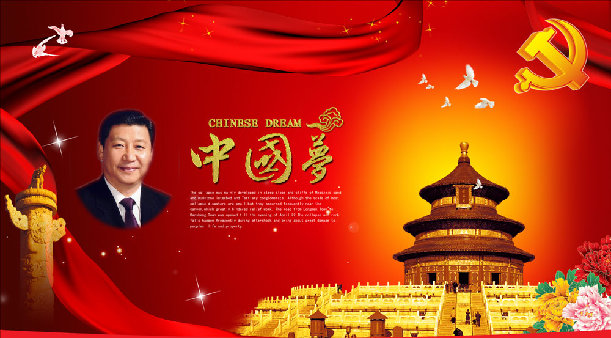
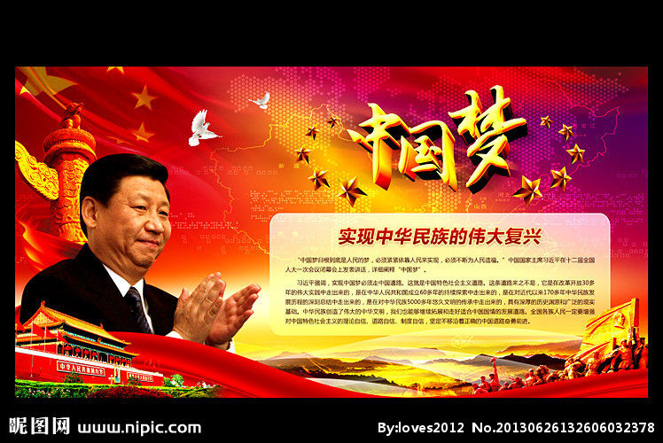
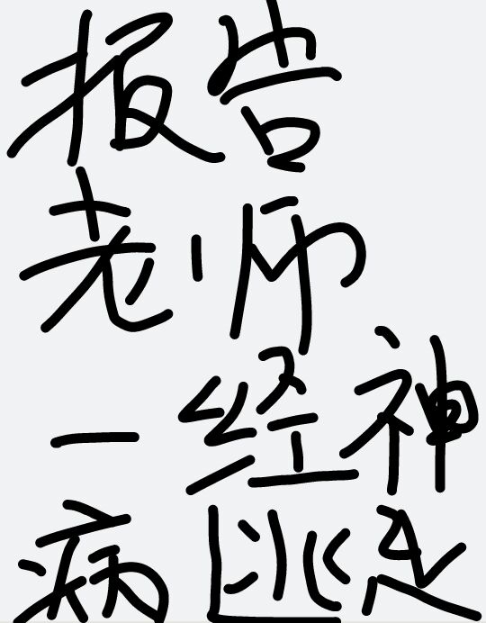
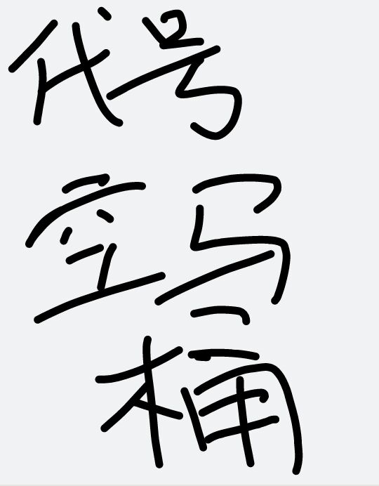

Conversation with 81184027 at Wed 28 May 2014 09:36:55 AM CST on 154115835 (webqq)
(09:37:25 AM) 上善若水:
(09:37:25 AM) 上善若水:
(09:39:11 AM) 福建-福州&水浒: :face56:
(09:44:02 AM) 蔚蓝的天空: 一个牧师正在树林里走的时候，忽然出现了一头熊，熊显然饿坏了，看见牧师，就直冲过了。
牧师吓坏了，大声祷告，“神啊，救我，请你把这头熊变成基督徒。”那头向他走来的熊忽然停住了，过了2秒钟，熊高举起双掌，说：“感谢上帝赐予我的食物”
(09:46:21 AM) 蔚蓝的天空: 牧师：你能告诉我上帝在哪里，我给你两块钱奖金。
小孩：要是你能告诉我，上帝绝对不会什么地方出现，我给你4块钱。
(09:53:15 AM) 上善若水: 【比利时的一起宣判】一女子坠落受伤，一男子洗劫了她，但不忍女子死亡又报警，男子被起诉。最终法庭作出无罪判决。法官称：“每个人内心都有脆弱和阴暗的一面，对于拯救生命而言，抢劫财物不值一提，我宁愿看到下一个抢劫犯拯救了一个生命，也不愿看见奉公守法的无罪者对于他人所受的苦难视而不见！”
这是比利时不适合中国，中国适合三国。。。。。。杀！啥米视而不见？那在中国叫美德！
(09:55:32 AM) 蔚蓝的天空: 牧师的女儿在楼上睡觉，哭了，牧师上楼问她为何哭。
爸爸，我怕。
不怕，小宝贝。上帝和你在一起。
爸爸，你来跟上帝在一起吧，我下去跟妈妈在一起，好不好？
(10:01:16 AM) 上善若水:
(10:01:29 AM) 上善若水: 天空，快像你的呕像学习
(10:03:33 AM) 潮哥: :D
(10:03:41 AM) 潮哥: 请相信本届政府
(10:05:55 AM) 上善若水: 天朝第一职业学校！就是不一般
(10:06:32 AM) 福建-福州&水浒: :pray:
(10:06:58 AM) 蔚蓝的天空: 阴暗的角落里 总会有几个潮虫
(10:07:07 AM) 蔚蓝的天空: 就像你们几个一样
(10:07:34 AM) 福建-福州&水浒: :pray:
(10:07:50 AM) 潮哥:
(10:08:29 AM) 蔚蓝的天空: 弱水 操哥 拖把
(10:08:42 AM) 潮哥:
(10:09:25 AM) 蔚蓝的天空: 
(10:09:37 AM) 福建-福州&水浒: 空马桶，为人民服务:;
(10:10:00 AM) 蔚蓝的天空:
(10:10:41 AM) lost message from #120888 to #120888
(10:11:17 AM) 潮哥: 白日梦
(10:11:11 AM) 蔚蓝的天空:
(10:11:51 AM) 蔚蓝的天空: 阴暗的角落里总会有几个潮虫
(10:12:05 AM) 蔚蓝的天空: 影响不了大局
(10:12:31 AM) 蔚蓝的天空: 
(10:13:04 AM) 潮哥: 不知道是不是王沪宁搞的
(10:17:40 AM) 光: 《神学政治论》的章节结构理解与划定 5
斯宾诺莎的著作不好理解，对一个普通的中国人而言，一来对《圣经》不够熟悉，二来对斯宾诺莎所处时代的《圣经》的神学解释不够熟悉，笔者亦非专门做《圣经》研究或圣经阐释学的人，在此仅分享下个人对斯宾诺莎此本《神学政治论》的章节结构的理解。
从一般的阅读而言，自然要从最表面的文本开始，逐步深入，深入的重要一步便是理解作者的全书布局与行文组织，以及二者与思想意图之间的紧密关 联。此工作类似于理解军事将领把控布置战役战局，也类似于理解棋局对弈者的棋子与火力布置——当然，这必然需要理解斯宾诺莎这个将领或对弈者的敌人是谁， 和这场战争的对弈双方（在历史时代中其实往往是多方）各自的意图和预期的均衡状况是怎样的。
对于这个牵连出来的问题，尚需要进一步周全相近地描述（同时要考察思想史外部包括宗教、经济等方面的历史状况和思想史内部的“智识气候”），在此简要描述两点：
第一，在欧洲政治发展史上，神学政治传统的压抑。这种压抑一方面可以被当时的尼德兰各个社会阶层所感知，一般会被描述为新兴资本主义受到的压抑，或进一步简单说就是教会把持的神权对国王的俗权的掣肘。
【17世纪的荷兰已经摆脱了西班牙的军事、政治的统治和宗教的干涉，建立了第一个资产阶级国家……荷兰国内也还存在着顽固的封建残余势力，荷兰新教教诲和犹太教会中的顽固分子继续迫害无神论者】《神学政治论》商务版1963出版说明
第二，斯宾诺莎个人所接受到的思想自由的压迫，这种压迫让他同柏拉图一样看到了城邦与哲学活动的内在紧张乃至是严厉冲突。
这种内在的紧张在斯宾诺莎之前的西方历史一直存在，但存在差异于柏拉图见证苏格拉底被处死的那种政治环境。斯宾诺莎所处时代主要的问题在于出于狂热、蒙昧的宗教信仰走向迷信和这种狂热、蒙昧被以神学的权力收入政治统治之网。
相比较于柏拉图的古希腊，年过一千七百多年后的欧洲已经有长足的自然哲学或科学思想的发展，启蒙和进步的时代精神在召唤。而当时神学的陈腐和 专横的教会统治实行的思想审查严重地阻碍到哲学活动，因为宗教不宽容的冲突频频发生。无论是出于思想自由对个人幸福（俗世幸福），抑或是信仰自由对虔敬上 帝（真正荣耀神），还是思想自由对一个哲人的自我拔升（哲学思辨的自由），思想自由的压迫都是严重的问题和障碍。要知道，斯宾诺莎就是因为其“异端思想” 而被开除教会，不得不以磨镜片为生。
出于这样的两个核心，斯宾诺莎融和了当时的自然哲学/科学方面的进展，同时针对、融和了很多相近时期哲学家的思考（比如霍布斯、笛卡尔）斯宾 诺莎在政治哲学、伦理学方面做了他的很多研究，这种研究本身肯定具有在20世纪以后的那种大学学术的特征，但我们必须承认斯宾诺莎并不是出于大学教授的无 忧无虑环境，而是在面对思想审查、宗教迫害的极端环境下对当时尼德兰乃至整个欧洲的政治-伦理问题的严肃思考乃至给出药方。
所以，斯宾诺莎的《神学政治论》的主要任务也是针对这些矛盾和紧张而来，总体来看本书可以被划分为两个部分，一是神学阐释的工作，二是政治理 论建设的工作。在斯宾诺莎所处的欧洲思想环境下，第二部分工作必须依赖于第一个工作的完成，不破不立。需要注意的是，斯宾诺莎并不是传统的经院神学家，他 的圣经阐释工作其意图绝不在让自己活得经院神学家们的认同，以至自提身位，或简单地是为了崇敬上帝、荣耀神。而至少带着两个重要的目的，第一是重新仔细地 梳理《旧约》当中有关希伯来人的神学政治观的历史演变过程，为批判神学政治观和运作模式提供切实的材料。第二是通过全新的原则重新解读圣经，为的是将神 学、宗教的权力给约束起来，一方面不至于沦落为迷信、狂热，另一方面不至于让敬神的虔敬干扰到哲学的思辨。
为进一步理解斯宾诺莎的写书意图，还是很推荐直接阅读本书的序，斯宾诺莎已经实在明确直白地交代清楚他的意图，相对于其正文内容，序言实在算不得有什么遮遮掩掩。
言归正题，在上面的理解基础上，可以尝试对本书的章节目录结构（不包括序的内容）进行一个大题的划分，这里只是笔者个人的尝试，供参考批评。
第一部分：重释《圣经》。
具体包括的章节包括第一到第十三章，而这里面的第七章不仅在数字上居于中心，而且在第一部分重释《圣经》方面也是居于最重要的核心，因为第七 章 题为【论解释《圣经》】集中地、显白地、归纳了斯宾诺莎做圣经阐释的最重要原则：以经解经，以圣经的历史解释圣经，不事先预立任何原则。
为直观展示斯宾诺莎释经的思考进路，具体的章节标题罗列如下
第一章 论预言
第二章 论预言家
第三章 论希伯来人的天职，是否有预言的才能为希伯来人所专有
第四章 论神律
第五章 论仪式的法则
第六章 论奇迹
第七章 论解释《圣经》
第八章 论《摩西五书》的作者与《旧约》中其余有关历史的书
第九章 论前面所提各书的其他问题，即是否各书完全为以斯拉所写 完，是否希伯来原文的旁注是不同的本子
第十章 用以上所用的方法检查《旧约》的其余各书
第十一章 论使徒们是以使徒与预言家的资格还是只是以教师的资格写的《使徒书》；解释使徒是什么意思
第十二章 论神律的真正的本原，为什么称《圣经》为神圣的，为什么称之为《圣经》。为什么因为里面是上帝的话，传到我们，没有讹误
第十三章 论《圣经》只教人以很简单的教义，这种简单的教义足能致人以端正的行为
第二部分 宗教、神学与哲学的分离论证
包括第十四和第十五章两章，在第一部分的基础上专门抽出篇幅来论证宗教与哲学二者应该互不干涉。在斯宾诺莎看来，宗教是为了让人信从上帝，通 过虔敬来端正人的行为而以人的幸福为最终目的，《圣经》的真只能通过圣经的历史、精神的内在得到证明，而不能诉诸自然的方法证实。哲学则是以讨论认识自然 万物为对象，以获得真理作为最终目的。
第十四章 信仰、信神的定义，信仰的基础，信仰与哲学永远分了手
第十五章 论神学不是理智的奴婢，理智也不是神学的奴婢，一个理智的定义，这个定义可以使我们承认《圣经》的权威
第三部分 神学政治传统的总结梳理与批判
包括第十七和第十八章两章，也是在第一部分的基础上专门抽出篇幅来总结希伯来人政治社会历史中发展出来的神学政治传统，并给出斯宾诺莎本人透视出来的真实。
第十七章 证明没人能或需要把他的所有的权利都交付给统治权。论摩西活着的时候与其死后知道王国成立之前的希伯来共和国与其优点。最后论神权共和国灭亡的原因以及何以即使继续存在也不能免于分裂
第十八章 自希伯来人的联邦和他们的历史引出一些政治学说来
第四部分 思想自由与理想政治的讨论
包括第十九章和第二十章，这两章其实跟第三部分紧密相关，其实也可以考虑划分到第三部分里面，这里单独列出来是因为这两章非常集中地表达了斯宾诺莎主张的政治社会建构的原则和基础，尤其是对于宗教宽容、信仰和思想自由的论证。
第十九章 说明关于精神方面的事物之权全靠元首，如果我们要正确地服从上帝，宗教的外形应该合乎公众的安宁
第二十章 在一个自由的国家每人都可以自由思想，自由发表意见
(10:17:51 AM) 光: http://book.douban.com/review/6679862/
(10:18:35 AM) 潮哥: :D
(10:19:08 AM) 光: 斯宾诺莎所处时代主要的问题在于出于狂热、蒙昧的宗教信仰走向迷信和这种狂热、蒙昧被以神学的权力收入政治统治之网。
(10:20:06 AM) 福建-福州&水浒: 
(10:21:10 AM) lost message from #120898 to #120898
(10:20:55 AM) 上善若水: :L
(10:22:47 AM) 上善若水: 第一个故事：
清末，法国使臣罗杰斯对中国皇帝说：“你们的太监制度将健康人变成残疾，很不人道。”没等皇帝回话，贴身太监姚勋抢嘴道——“这是陛下的恩赐，奴才们心甘情愿。怎可诋毁我大清国律，干涉我大清内政！？”
评论：大清国人人有病。什么病？做了奴隶而不知道自己是奴隶，还以为自由着的病。林语堂先生曾说过，中国有一类人，身处社会最底层却有着统治阶级的思想。
(10:20:36 AM) 福建-福州&水浒: 
(10:38:12 AM) The account has disconnected and you are no longer in this chat. You will automatically rejoin the chat when the account reconnects.